Ícone do app
Um sol nascendo sobre a linha do horizonte, pintado em guache. A marca é sempre a mesma; o que muda é o fundo. Cada fundo sai pronto nos formatos da App Store, da Google Play, do Android e do web-app.
O sol e a textura são imagens geradas por IA. O nome e o símbolo ainda são provisórios.
Os oito fundos
Uma variação é a oficial de cada loja. As outras servem de ícone alternativo, de tema de época e de material de divulgação.

#2A2140O símbolo que já está no app. O sol salta em qualquer fundo; em papel de parede escuro, o quadrado se funde e fica só o sol.Abrir em 1024 px
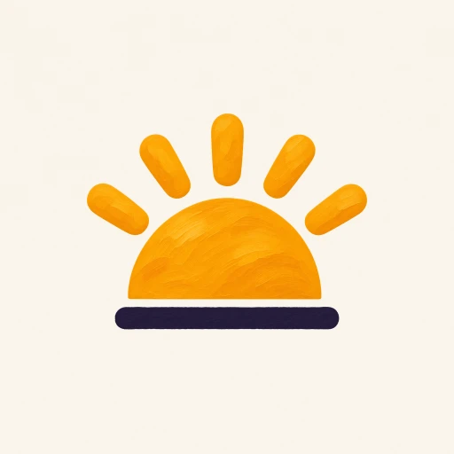
#FBF6ECA mais calma. O quadrado aparece inteiro em papel de parede claro e escuro; em página branca, a borda fica suave.Abrir em 1024 px

#55456EO meio do caminho: escura sem pesar.Abrir em 1024 px
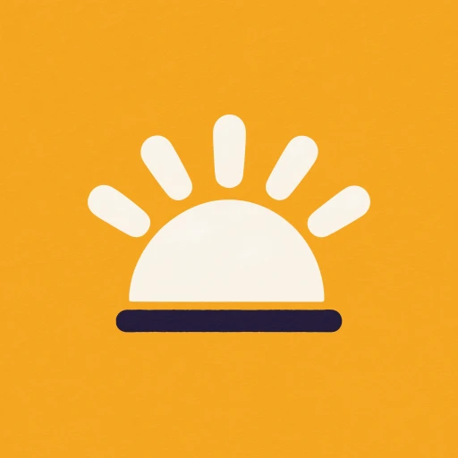
#F6A723A manga inteira, com o sol em creme. A que mais chama; para campanha e data especial.Abrir em 1024 px

#E9E5F4Alternativa de época ou de tema.Abrir em 1024 px
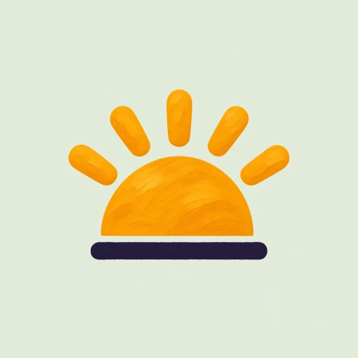
#E3EDDCAlternativa de época ou de tema.Abrir em 1024 px
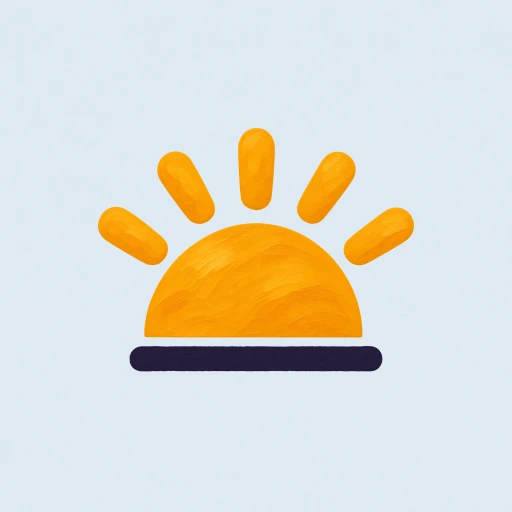
#DFEBF3Alternativa de época ou de tema.Abrir em 1024 px
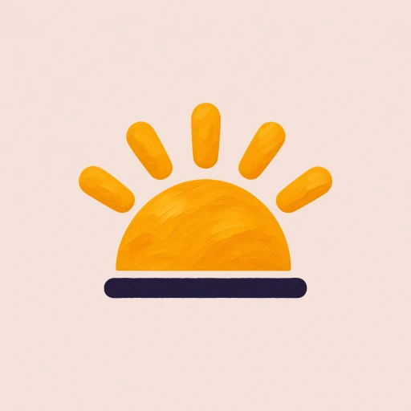
#F7E3DCAlternativa de época ou de tema.Abrir em 1024 px
Em tamanho pequeno
Onde o ícone mais aparece. Cinco raios grossos e uma linha: a forma se lê até na aba do navegador.
Ameixa
Creme
Aba do navegador, em tamanho real e ampliado
Ao lado de outros apps
A mesma grade, com papel de parede claro e escuro.
App Store e iPhone
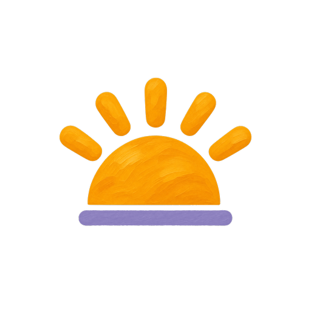
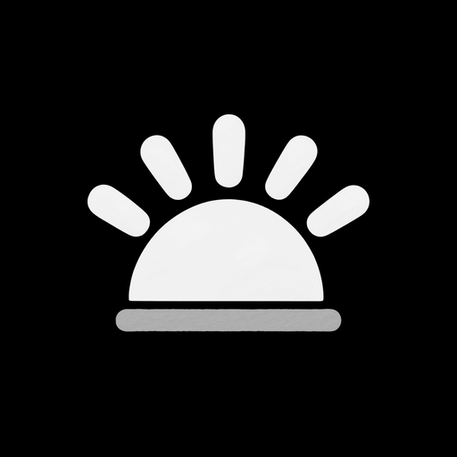
- Arquivo de 1024 × 1024 px, quadrado, sem transparência e sem cantos arredondados: quem recorta é o sistema.
- A pasta
ios/AppIcon.appiconsetentra direto no Xcode, com os três modos. - Para o ícone em camadas (o vidro do iOS 26 e 27), as duas camadas estão em
ios/camadas-icon-composer. O arquivo.iconse monta no Icon Composer, que vem com o Xcode.
Google Play e Android
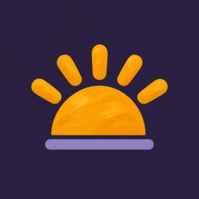
- Loja: 512 × 512 px, PNG de 32 bits, até 1024 KB, quadrado cheio, sem cantos e sem sombra no arquivo.
- Aparelho: três camadas de 108 × 108 dp (fundo, marca e uma cor só), em cinco densidades. A marca tem 50 dp e cabe na área de 66 dp que nenhum recorte corta.
- A pasta
android/resentra direto no projeto.

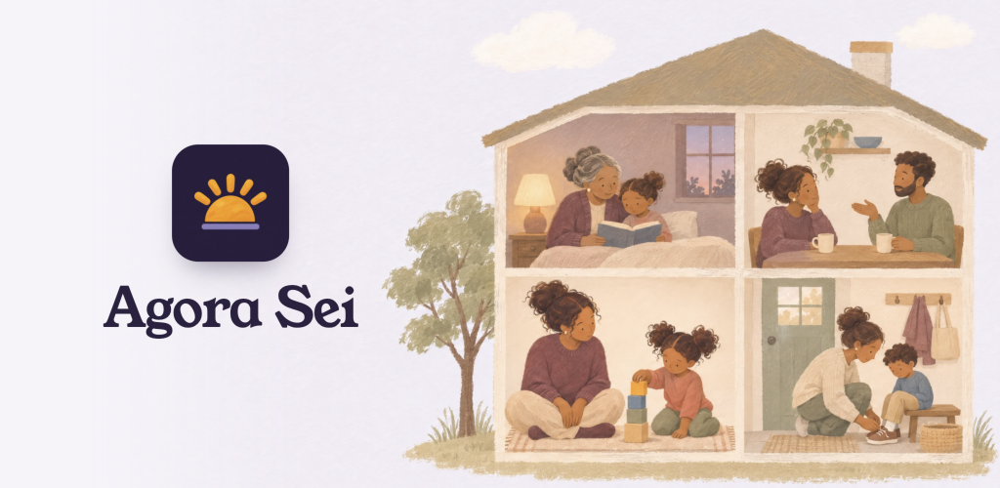
google-play/destaque-1024x500-casa.png
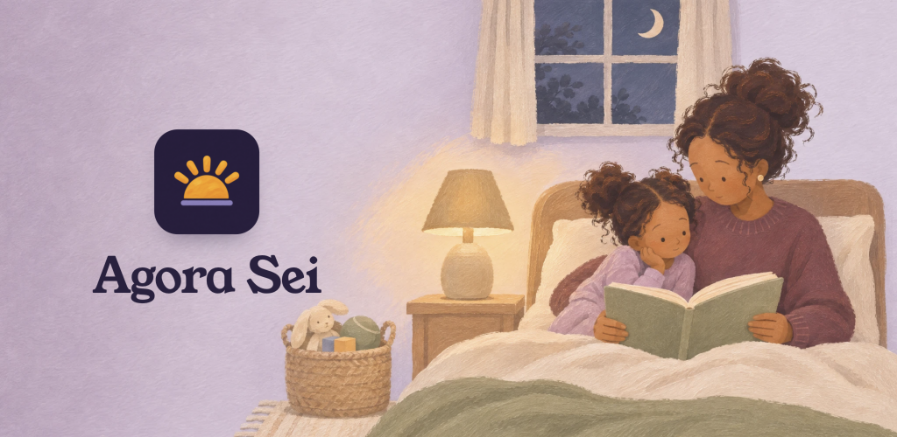
google-play/destaque-1024x500-noite.pngWeb-app e perfis
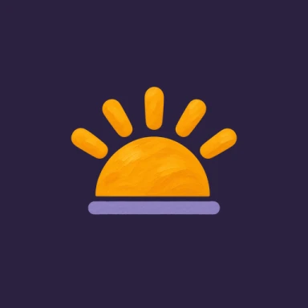
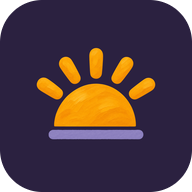
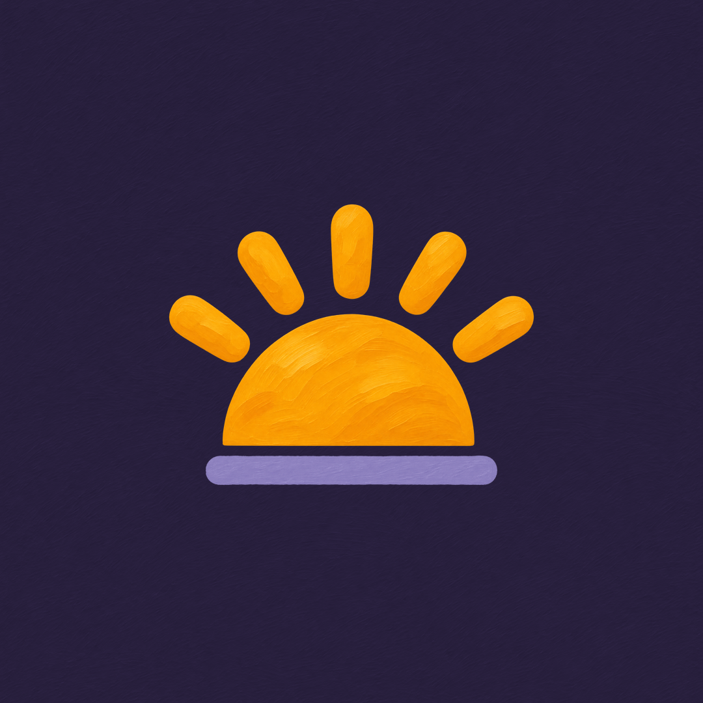
- É o que o protótipo usa hoje. Os arquivos da principal já estão em
design/marca/web, pasta que o build do app copia. - Dois ícones no manifesto, cada um com o seu papel:
any(192 e 512) emaskable(192 e 512). Maisapple-touch-icon.png(180) efavicon.ico(16, 32 e 48).
Arquivos
Cada fundo tem a sua pasta em design/icone-app/<fundo>/, com os mesmos 47 arquivos de loja, mais três prévias para esta página.
| Para onde | Arquivo | Medida | Formato |
|---|---|---|---|
| App Store | app-store/app-store-1024.png | 1024 × 1024 | PNG sem transparência |
| iPhone e iPad | ios/AppIcon.appiconset/ | 1024 × 1024, três modos | PNG; o escuro com transparência; o monocromático em cinza |
| iPhone e iPad, em camadas | ios/camadas-icon-composer/ | 1024 × 1024 | Fundo opaco e marca com transparência |
| Google Play | google-play/play-512.png | 512 × 512 | PNG de 32 bits |
| Android | android/res/mipmap-*/ | 108 dp e 48 dp, em cinco densidades | Fundo, marca, uma cor só, e os dois antigos |
| Web-app | web/ | 192, 512, 180, 48, 32 e 16 | PNG, ICO e o trecho do manifesto |
| Perfil | perfil/perfil-1080.png | 1080 × 1080 | PNG sem transparência |
Para refazer tudo: node design/_fonte/gerar-icone-app.mjs. Para um fundo novo, acrescente uma linha na lista do começo do gerador.
Regras
- O ícone não leva texto, nome nem selo. A loja já mostra o nome ao lado.
- Não arredonde os cantos nem ponha sombra no arquivo: cada loja faz o seu recorte.
- O sol é manga e a linha é ameixa. Sobre fundo escuro, a linha clareia; sobre manga, o sol fica creme.
- A marca ocupa 62% da largura nas lojas. No Android e no ícone mascarável ela é menor, para caber em qualquer recorte.
- Uma variação por loja. Trocar o ícone oficial a toda hora atrapalha quem procura o app na tela.
- Cada ícone alternativo no iPhone precisa dos seus três modos. Eles já estão em todas as pastas.